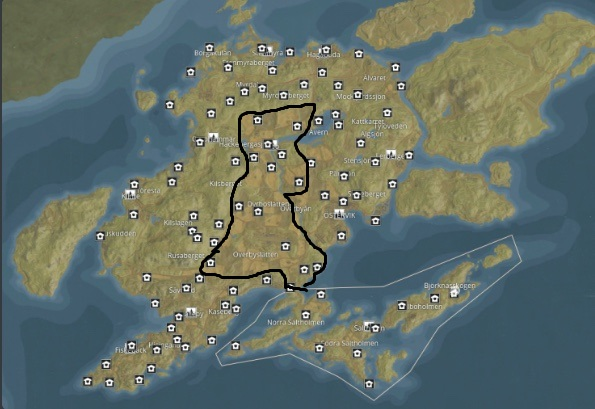
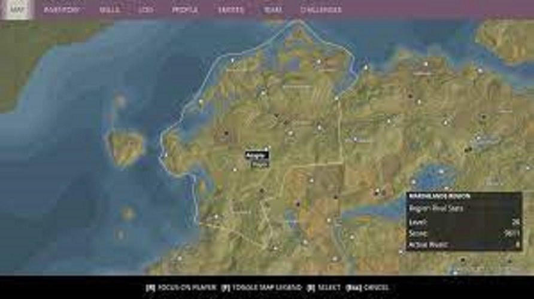
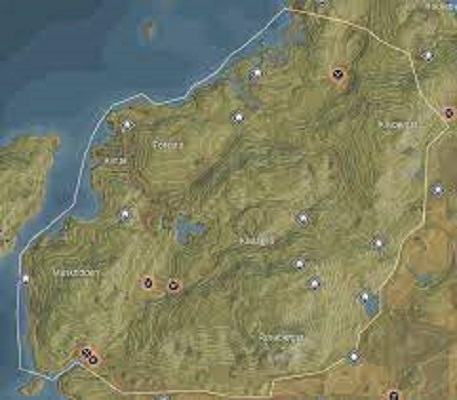
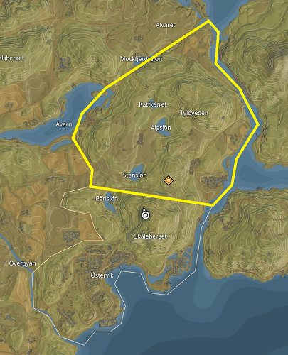

You'll start in this region.

This region is very hilly and over looking the coast.

This region is like it's name, it is very flat and open with fields everywhere.
The Marshlands Region has some moutains but is mostly a swamp.
The mountains region is the chill area where there are not as much big threats.
The Forest Region is where you'll build your base and start wave defence missions.
This region has a lot of high level threats.